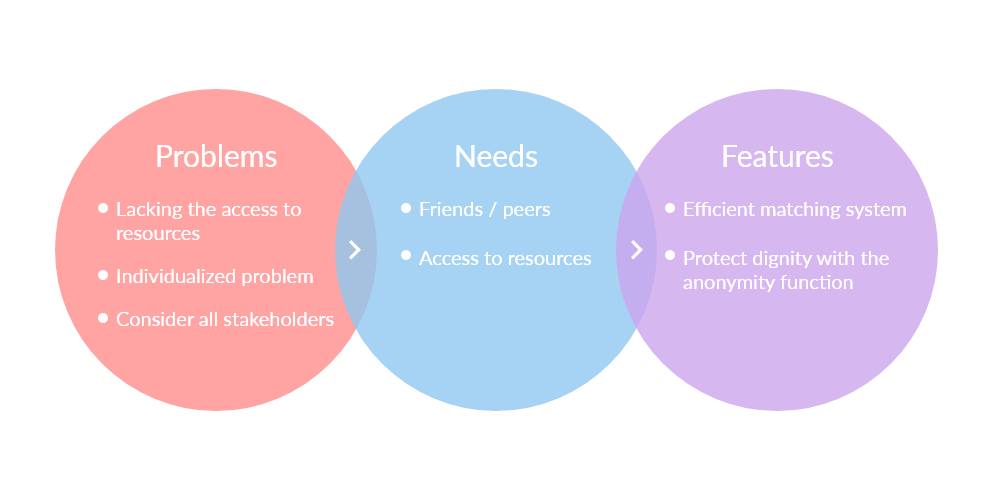
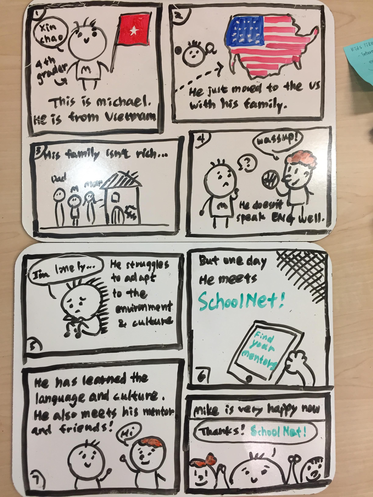
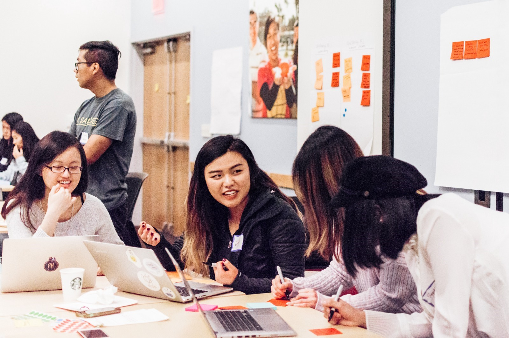
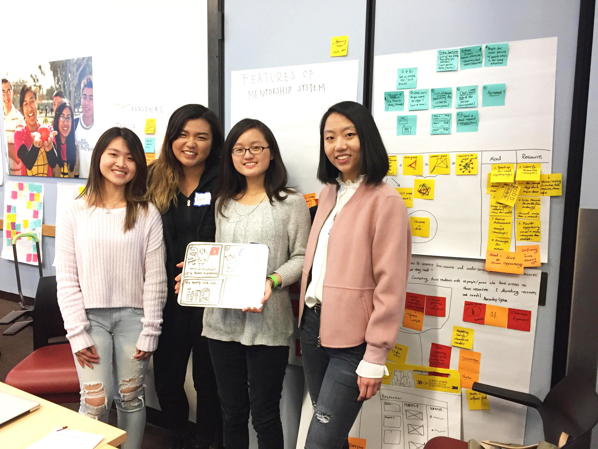

connectMe
"Judges Choice for Design Frontiers 2018"
Goal: Design an application to connect low-income and underserved people with the resources they need
Date: March 10th, 2018
Duration: 6 hours
Skills: Case Study, Needfinding, UX Design, Wireframing, Prototyping
Tools: Pen & Paper, Sticky Notes
Role: UI/UX Designer
Awards: 1st Place Judges Choice
What is Design Frontiers?
Design Frontiers is a day-long event consisting of a design sprint and accompanying talks which are sponsored by Design at UCSD and UC San Diego Design Lab. Design Frontiers is an effort to increase cross collaboration of students across multiple disciplines and show UC San Diego students, through a hands on experience, how design thinking can apply to various fields. The goal is to focus on design beyond UX and product design. This quarter’s event will focus on the topic of education.
What is a design sprint?
A design sprint is an interactive process where participants have the opportunity to collaborate and use design thinking principles to rapidly innovate solutions to a given task under a time constraint. Design thinking is an ideology that advocates for a human-centered approach to innovate problem solving. The design-thinking process comprises of the key stages of empathizing, defining, ideating, prototyping, testing, and implementing.
Challenge Brief
Topic: Designing Inclusive Classrooms
Client: San Diego Unified School District (SDUSD) and Colleges in San Diego
Design Challenge: Design a classroom experience that is inclusive and receptive to the needs of underserved youth, especially those who are homeless and/or are from low income, working class families.
Topic: Designing Inclusive Classrooms
Personas
1. Jessica, 11th grade high school student: Jessica does not have a stable housing situation. Sometimes she stays at her friends’ houses if their parents allow it. She has a strong work ethic, but is unable to complete her assignments at times because of the lack of access to resources for students in her situation. Jessica wants to go to college, but is unsure if she can afford it, or even be accepted to a university.
2. Michael, 4th grade elementary school student: Michael and his family recently moved to the United States from Vietnam. They are considered a low-income household Michael is learning english and has been enrolled in elementary school. He has been in school for four months and struggles to adapt to the new culture and learning environment. Additionally, he struggles to find friends because of the language barrier.
Overview
SDUSD serves over 130,000 students who come from various backgrounds. Of these students, around 21% come from low-income, underserved, working class families. Additionally, San Diego has the fourth highest homeless youth population in the United States. Because of the lack of financial stability and an unstable housing situation, many of the students who fall under this category perform worse than their counterparts who have financial and housing stability. Finally, many of these underserved students are also english-language learners, and need to adopt to a learning environment that isn’t in their native tongue.
Problem & Design Goal
After reading the personas and design brief, our team has decided to focus on the problem of “how to connect low-income & underserved students with the resources that they need?”. By focusing on this problem, our goal is to find an easy way to connect students in need with people or their peers who have access to the resources that they need.
Iteration
Ideation Phase
During our ideation phase, we used post-its and brainstorms any ideas that we think are related to the topic we're tackling. We wanted to to identify who are the users clearly and what features should we have in our application to be able to provide a solution to their problems. At this stage, we always remind ourselves of the users and try to empathize with them.
Design Summary
Our point of view inspired our design that everyone is a "seeker" and a "provider." Everyone has their strengths and weaknesses, so we want to utilize people to help their peers, and in turn, someone will also help them someday. We want everyone to be able to contribute to the network. To make this happen our application helps to find a match between the people in need and the people who have the resources. There might be some concern about safety if we want people to meet random people, so our application has prevention by enforcing registration using school email. By implementing this rule, people that are in our network will all have identity validity.
Storyboard
After we finished brainstorming, we started making our storyboard to further empathize with our users and to re-evaluate our ideas whether we have addressed all of the problems.
Key Takeaways
From working together in a team of four, I have learned the importance of teamwork and brainstorming. Through hours of brainstorming together, we can get many unique and fascinating ideas that we could combine to construct a well-formed solution to the problem we're tackling. It's exciting to hear lots of ideas that we couldn't think of by ourselves. It's genuinely the best memorable experience that makes me understand the value of a team.
 